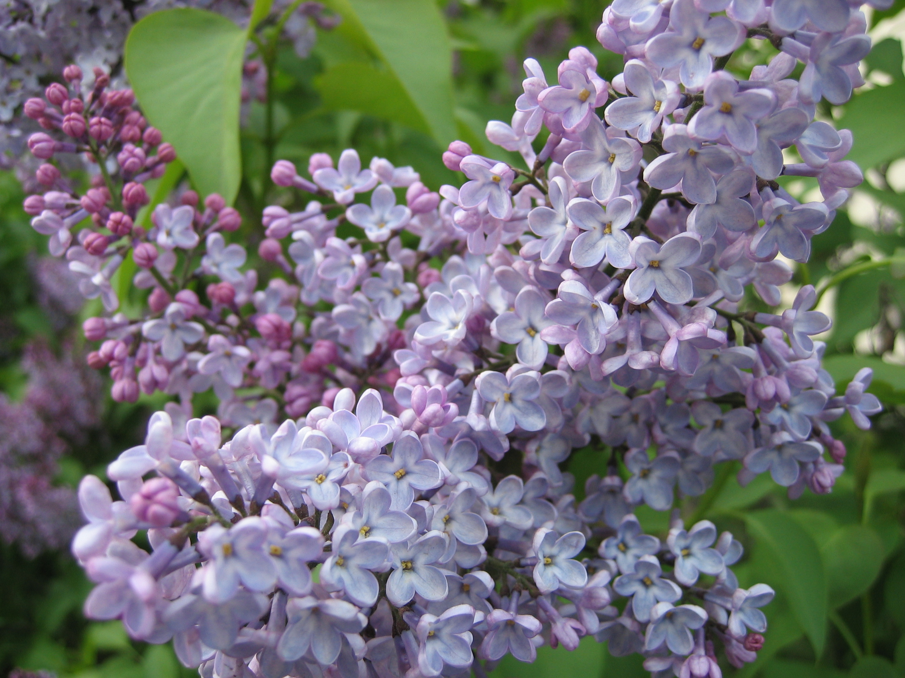

Yasəmən — bitkilər aləminin dalamazçiçəklilər dəstəsinin zeytunkimilər fəsiləsinə aid bitki cinsi. Ətirli çiçəkləri olan yasəmənin sarmaşıq kolu yabanı vəziyyətdə Lənkəran dağlarında rast gəlinir. Yasəmən gülünü iyləmək başağrılarında, beynini möhkəmlətməkdə kömək edir. Yasəmən güllərinin kompresi dəri çillərini təmizləyir və üzü qızardır. Xaricdən istifadə edilən yasəmən yarpaqlarından məlhəm ereksiyanı gücləndirir. Yasəmən cövhəri saçları açıq boyayır, daha doğrusu, onları rəngsiz edir. Həddindən artıq qəbul etsən başağrısı əmələ gətirir. Bu halda bənövşə, qızılgül və sirkə onu tarazlaşdırır.
